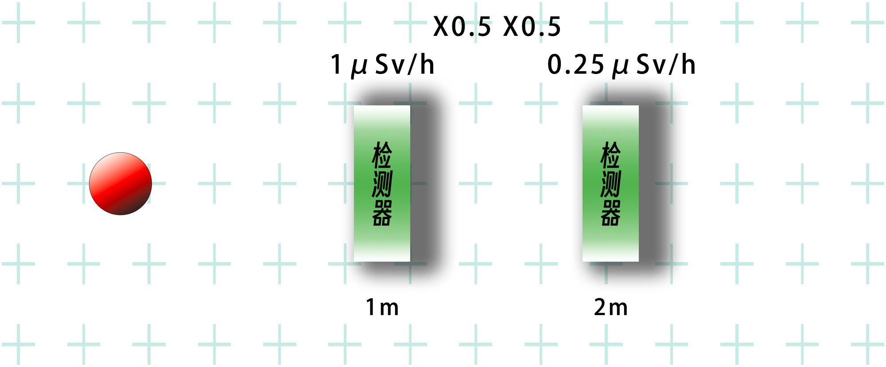
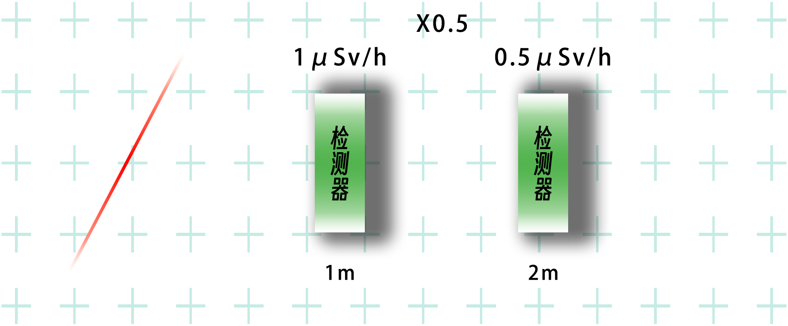
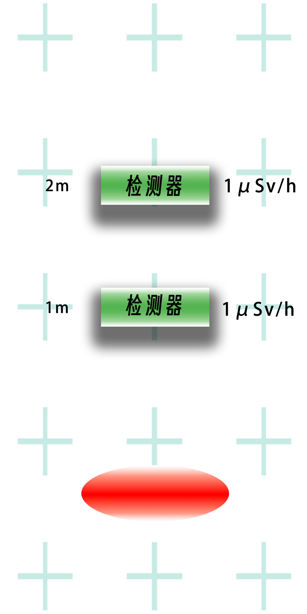
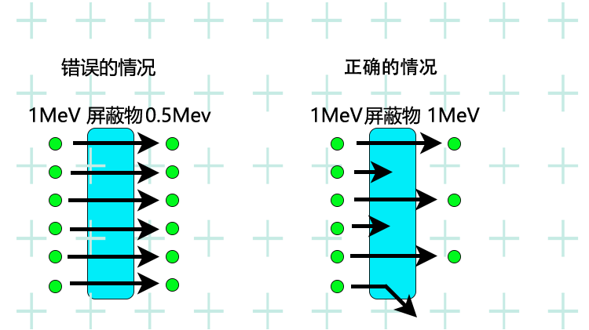

基础知识/屏蔽与衰减
辐射衰减（γ射线）
辐射源距离与辐射强度的关系
我们经常听说辐射强度与距离的平方成反比。
很多人理解1m距离的1μSv/h是2m距离的1/4，即0.25μSv/h。
然而，这实际上可能是不正确的，这取决于辐射源的形状。
当说它与距离的平方成反比时，比如说监测站的高度是20m，我们往往会认为它安装在高处是为了让辐射剂量显得更小。然而，这实际上是错误的。
我将解释距离和强度之间的关系。
当辐射源为点时

首先，辐射源是一个点。
举个例子，想象一下这样一种情况，例如，一坨放射性物质掉下来了。
如果你远离这坨东西，辐射强度就会与距离的平方成反比下降。
因此，如果在 1 m 处为 1 μSv/h，则在 2 m 距离处为 1/2 × 1/2，因此将为 0.25 μSv/h。
反之，如果从1m接近0.5m，强度的增加与距离的平方成反比，所以2×2就是4倍，4μSv/h。
但是，需要注意的是，这只有在距离达到一定程度的情况下才有效。
在解释内部辐射暴露时，听到这样的解释：“1 微米是 1 米的 1/1,000,000，因此高出 1 万亿倍”，这是不正确的。
辐射强度与距离的平方成反比的原因是，辐射从辐射源的不同方向发出，所以照射到物体上的辐射量随距离而变化。
如果距离增加一倍，从辐射源看到的物体的长度和宽度将减半，因此面积为1/4。
由于从各个方向发出的辐射偶然击中物体的概率也是1/4，所以辐射的强度也将是1/4。
反之，随着物体越来越近，从辐射源看物体越来越大，所以剂量也相应增加。
但是，无论距离多近，辐射源发出的辐射量都不会增加。
如果在距辐射源 1m 处有一个 10cm x 10cm 的物体，大约有 0.08% 的发射辐射会击中它。
在0.5米处，辐射剂量增加了4倍，达到0.32%，但即使物体离辐射源更近，辐射剂量也只有50%，因为最大的辐射剂量是物体所在一侧发出的所有辐射。
如果将它带入体内，它将从各个方向击中身体，因此将是100%，但即使是这样，最大也只是100/0.08=1250倍的最大值。
当辐射源为一条线时

接下来是辐射源为线的情况。
这条线是一条向前方无限远延伸的线。
这种情况类似于一条笔直的铁轨或道路发出的辐射，一直延伸到不再可见的地方。
在这种情况下，辐射强度的降低与距辐射线的距离成反比。
因此，1m处为1μSv/h，2m处为1/2，所以为0.5μSv/h。
当辐射源为平面时

最后，当辐射源是平面时。
这个表面也是一个无限宽的平面。
就好像放射性物质均匀地沉积在一望无际的平坦地面上。
在这种情况下，无论与辐射源的距离（高度）如何，辐射强度都是相同的。
这可能很难想象，但对于一个无限宽的平面来说就是这样。
现实中并没有无限宽的平面，地面高低不平，还有建筑物和其他障碍物遮挡。
因此，由于这些差异，辐射源离地表越高，辐射强度越弱。
然而，它并不像辐射源是一个点时那样，与距离的平方成反比，可以想象，它的强度比线的强度弱得更慢。
根据在不同高度的实际测量，地表和地面以上1米的差异约为1.3倍。——RT
东京都政府的监测站所测得的实际数值，在18米高处为0.0692μSv/h，在离地面1米高处为0.08μSv/h，所以差别不大。——RT
衰减时数量减少而不是能量减少
辐射有多种类型，但伽马射线会根据距离衰减。
即使在空气中也会衰减，如果用铅等屏蔽，衰减会很大。
例如，如果辐射衰减到1/2，则辐射强度将是1/2，因此剂量率（Sv/h）的值将减半。然而，此时的辐射能量仍保持原来的大小。
看起来辐射的能量（MeV）就是强度，但能量是不变的，而且不随辐射发出时的能量而变化。
在衰减的情况下，辐射发射的数量会发生变化。
将如下图所示。
当能量为1MeV的辐射被一个障碍物衰减一半时，辐射的能量没有减少，但能通过障碍物的射线数量减少了一半。
